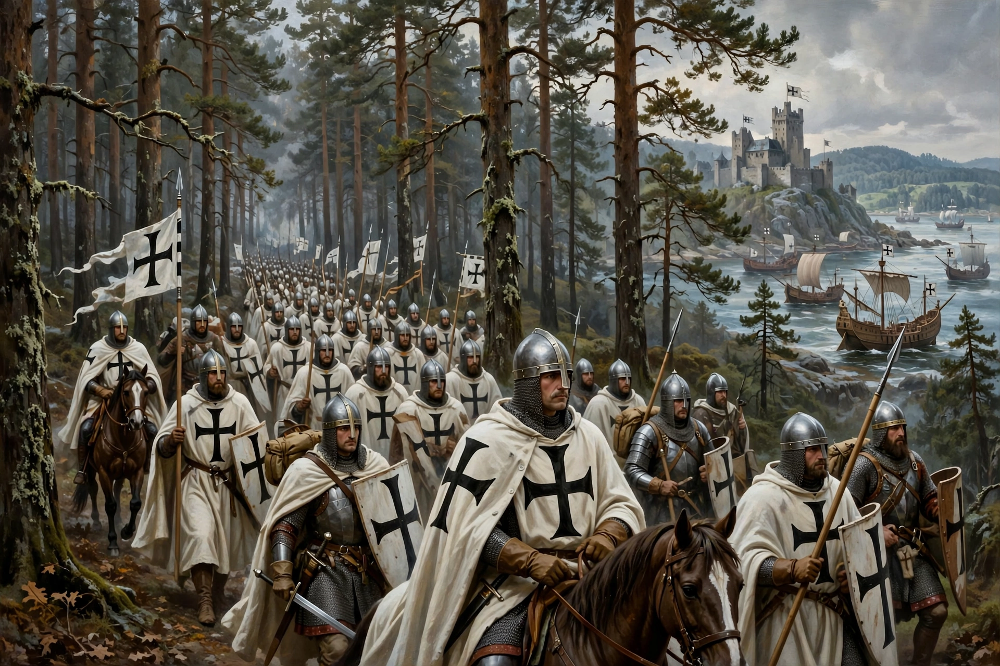

The Northern Crusades, or Baltic Crusades, were Christianisation campaigns undertaken by Catholic Christian military orders and kingdoms, primarily against the pagan Baltic, Finnic and West Slavic peoples around the southern and eastern shores of the Baltic Sea, from the 12th to 16th centuries.

| Northern Crusades | |
|---|---|
| Date | c. 1147 – 1410s |
| Location | Baltic region, Prussia, Livonia |
| Participants | Teutonic Order, Livonian Order, Denmark, Sweden |
Beginning with the Wendish Crusade (1147), crusaders conquered and converted the Livonians, Estonians (Livonian Crusade), Prussians (Prussian Crusade by the Teutonic Order from the 1230s) and Lithuanians, though Lithuania resisted and later united with Poland. Swedish crusades targeted Finland and Karelia, clashing with Novgorod.
The campaigns created the Monastic State of the Teutonic Order, German eastward settlement (Ostsiedlung), and Riga and other Hanseatic cities, reshaping Baltic politics, language and religion. See Teutonic Order, Norse Greenland for Norse expansion context.